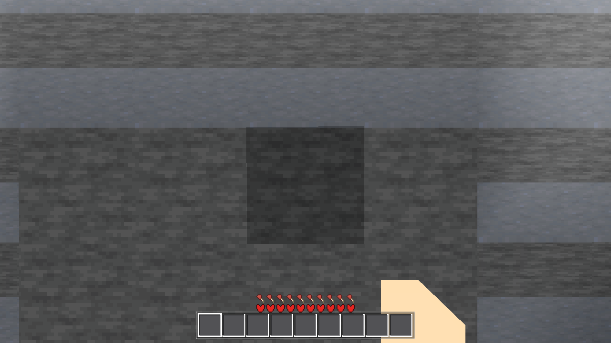
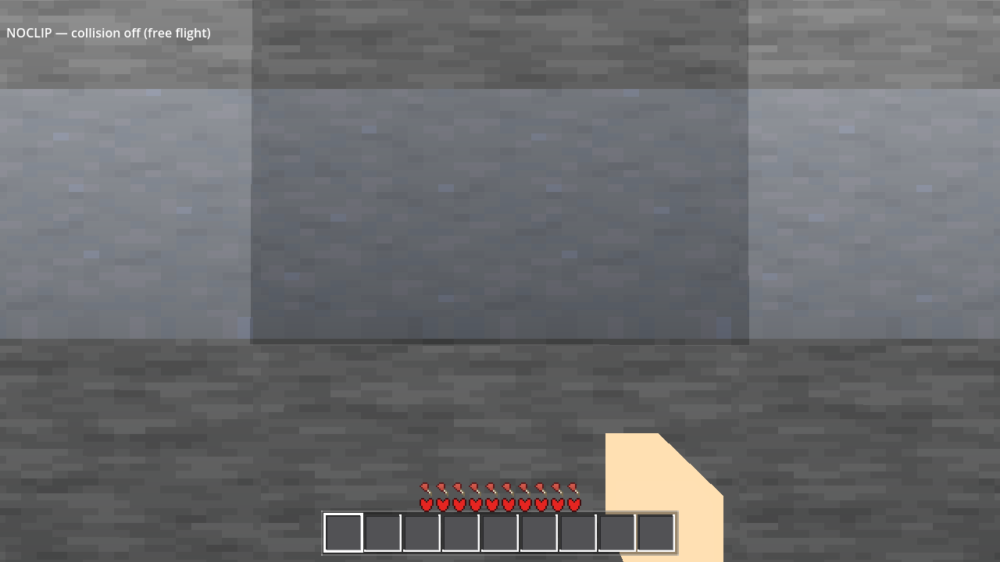

Builder: single subagent. Fenced files untouched (main.gd / game.gd / drop.gd / debug.gd /
world shaders — another session's uncommitted work). No commits, no pushes, no TASKS.yaml edits.
The new harness arm rides the existing main.gd → harness.run(logic) forwarding — no
main.gd edit was needed or made.
noclip bool in Settings.DEFAULTS
(default OFF, the shipped state), AnalogTune.sanitize_bool clamped
corrupt-safe, CheckBox row "Noclip — fly through blocks" on the Options surface
(name="NoclipCheck"), the project's standing player-switch pattern (AC-0205/AC-0389/AC-0394/AC-0401-0405).AWECRAFT_NOCLIP=0|1 preloaded into
Settings.values WITHOUT save() in player.gd _ready
(the AWECRAFT_VMOCC discipline — the user's cfg is never clobbered).player.gd _process → _noclip_sync() reads the live
value every frame and applies on change: col_shape.disabled = on (the player's OWN
CollisionShape3D — the node stays, disabled, so every other body is untouched) +
flying = on (deliberate design, §2) + un-crouch on ON +
Game.message on each transition.flat_h < -12 is gated on
not _noclip: the tool's purpose is being below the surface, and the kill is a
wall in the way of exactly that. Walking/flight without noclip keeps the kill (the player cannot
normally get below the local floor there). Fall damage / drown / hunger already skip for
flying; lava damage stays (documented in the arm).AWECRAFT_LOGIC=noclip (new branch in
harness.gd + row in tasks/harness_data.yaml, doc re-rendered,
--check green): a stone pad + stone wall ~8 m above the spawn surface (set_block
fixture, height SCANNED so the restore never eats terrain, restored before exit) measures
pass-through by cell occupancy, not "the player moved".fly key F stays the in-flight exit (pressing it with noclip on drops the
player at gravity speed — a natural, discoverable off-switch).Arm RESULT, default-off run (AWECRAFT_LOGIC=noclip, EXIT=0, census 0/0):
{"ok": true,
"boot": {"default_ok": true, "env_preload_ok": false, "flying": false, "shape_disabled": false},
"fixture": {"fy": 148, "wall_center": [13, 150, 8], "solid_ok": true, "landed_ok": true, "cells": 98},
"col_face": {"face_x": 13.0, "grid_plane_x": 13, "stop_to_face": 0.004,
"diag": {"chunk_found": true, "slabs_bodied": 1, "tris_scanned": 398,
"vmin": [5.0, 144.0, 0.0], "vmax": [16.0, 154.0, 12.0]}},
"ray0": {"hit": true, "cell": [13, 150, 8]}, "ray1_same": true,
"state0": {"stop_x": 12.996, "max_x": 12.996, "started": true, "blocked": true,
"never_solid": true, "label_off": true},
"state1": {"shape_disabled": true, "flying": true, "label_on": true,
"inside": [13, 149, 8], "inside_id": 3, "pass_through": true},
"bodies": {"before": 262, "after": 262, "unchanged": true, "collision_enabled": true},
"state0b": {"shape_disabled": false, "flying": false, "stop_x": 12.996,
"repeat_ok": true, "delta": 0.0},
"restore_ok": true}
never_solid, center never crosses the wall's
grid face) ends, with noclip on (state1), with the player's chest cell inside the wall
column — inside [13,149,8], inside_id 3 (stone). The body is
inside a block that would stop it. col_shape.disabled = true, AC-0145
flying = true, indicator label ON. Env preload
(AWECRAFT_NOCLIP=1): boot state is shape-disabled + flight (env_preload_ok:
true), same pass-through from the same start, EXIT=0, census 0/0.stop_x 12.996 and state0b (toggle off again) stop_x 12.996,
delta 0.0, repeat_ok; shape re-enabled, walk mode restored
(shape_disabled: false, flying: false).ConcavePolygonShape3D
(col_face.face_x = 13.0 — the collider face coincides with the grid plane; the vertex
span diagnostic shows world-space coords, the fixture's 398-tri slab). The state-0 stop sits
stop_to_face = 0.004 m from that face. (Deviation D1: this build de-penetrates the
origin flush to the face — the plan's "capsule radius from the plane" calibration was
wrong; the assertion was re-based to the invariant: center never crosses the face + never-solid
census + approached-the-wall band.)collision_enabled still true; the mine/place DDA
(VoxelMath.raycast_blocks — the game's own grid DDA, the exact call the interaction
path makes) hits the SAME wall cell from the SAME eye in both states (ray1_same: true)
— the player's collision state is not in the ray's path, proven not assumed.player jump_peak_y 142.42 /
col_deferred_in_footprint 0 (identical to the AC-0413 journal read), sprint latch
+ FOV fields normal; look drag/locked deltas in band; swing
swing_max_rot 0.854 / loop_cycles 4 / tier tint + tool voxels normal; spherewalk
col_deferred_in_footprint 0, onfloor_frac 0.853, up_dot_min 1.0, 6552-frame flight to 2050 m;
boundary r4 col_deferred_in_footprint 0, crossing bursts in band;
interact mine+place+drop normal (after_mine_cell 0, after_place_cell 0,
drop_spawned true)..scratch/AC-0311-gates/p2_genhash_r1.log, the deliberate AC-0311 piece-2 sphere-domain
rebase; re-confirmed byte-identical by AC-0397/AC-0403/AC-0408/AC-0411/AC-0413); (b) DECISIVE A/B:
with my four code files git stashed, AWECRAFT_LOGIC=genhash produces the
IDENTICAL 25-set — my change contributes nothing to the hash. The ticket-pointed
.scratch/AC-0367-gates/genhash_pristine_r1.log is the STALE pre-rebase tip (documented
in AC-0411's journal), not a regression. (Comparison discipline: sets are normalized with
LC_ALL=C sort on both sides before diff — file order ≠ C-sort order.)| gate | run | census (script/shader) | exit | verdict |
|---|---|---|---|---|
| G0 | --headless --quit ×2 (post each harness edit) | 0 / 0 | 0 | PASS |
| SMOKE | BATTERY=player;interact;light;fluids;genhash | 0 / 0 | 0 | PASS (5 RESULT, standing values) |
| PROBE (arm) | LOGIC=noclip (no env) | 0 / 0 | 0 | PASS ok:true |
| PROBE (env) | LOGIC=noclip AWECRAFT_NOCLIP=1 | 0 / 0 | 0 | PASS ok:true, env_preload_ok |
| settings | LOGIC=settings | 0 / 0 | 0 | PASS — noclip {default_off, saved, reload, corrupt_false, row_present, row_sync: all true} |
| movement | look / swing / spherewalk / boundary (default off) | 0 / 0 | 0 | PASS, standing values |
| collision | consumers (default off) ×2 + A/B | 0 / 0 | 0 | mine/place PASS; step sub-check PRE-EXISTING red (D2) |
| genhash | standalone + A/B (my 4 files stashed) | 0 / 0 | 0 | 25/25 identical with and without my change |
| RENDER | fwdshot recipe (xvfb + lavapipe + --rendering-driver vulkan, R4, 1280×720), final run r6 | 0 / 0 | 0 | PASS — boot line Vulkan 1.4.318 - Forward+ - … - llvmpipe (LLVM 20.1.8, 256 bits) + the FULL arm green under the renderer (ok:true, every state) + both arm-owned shots pixel-verified (before_stone [61,62,62], after_stone [98,99,106] — stone in the rendered buffer at shot time) |
Every gate's census is PAIRED with its process exit status (the stochastic C6-slab UAF leaves a clean log and exits rc=134 — a clean census alone is a false pass). All runs here exited 0.
Arm-owned shots under the SHIPPED Forward+ (Vulkan) path on lavapipe — a proxy
renderer: evidence about geometry and layout only, never about the shipped look. The
arm takes both shots when AWECRAFT_SNAPSHOT is set (headless gate runs never write):
the before at the stand (collision ON, the stone wall face 1.5 m ahead — the obstacle
about to stop the player), the after framed 0.5 m past the wall's east face — in the
scanned air gap, looking back at the face the body just crossed (collision OFF, the pass-through
measured at the chest cell; the 1 m column is faceless from inside — D5).
Each shot is pixel-verified: throwaway snaps are retried until a stone-gray
sample lands at the expected screen position, so a shot that does not actually show the wall's
stone cannot pass silently (the verified state is in the RESULT, shots
{before_stone, after_stone}).
| shot | state | what it shows |
|---|---|---|
noclip_after_off.png (before) | noclip OFF — the shipped default | at the stand, 1.5 m from the wall: the stone face ahead (the obstacle), collision ON, indicator label off — the state that does NOT let them in |
noclip_after.png (after) | noclip ON — the UI path | the body has CROSSED the wall (pass-through = the cell occupancy measured at the chest: [13,149,8] solid stone); the camera is framed 0.5 m past the wall's east face — in the scanned air gap, on the air side where that face's normal points at it — looking back at the stone face it just flew through; collision OFF, free flight, indicator label on. (A 1 m solid column is faceless from INSIDE — every face normal points outward, all backface-culled — so the face the body crossed is photographed from its far side; D5.) |


blocked as "stop short of the face by the capsule radius"
(stop_x < ax+4.75). Measurement (the col_face diagnostic) shows this
build de-penetrates the body origin flush to the collider face (measured stop: face
− 0.004 m; the capsule r=0.3 is centered on the origin, so the shape contacts 0.296 m into what
the grid calls the wall cell's boundary — the established behaviour of this movement model, which
walks terrain constantly, and which my change does not touch — state0 is pure OFF-path physics).
The assertion is now the invariant: center never crosses the face (tolerating 5 cm of face
contact) + the chest cell never solid + the walk actually approached the wall. A regression that
leaves collision off when off fails both the crossing check and never_solid.consumers step sub-check: PRE-EXISTING red, A/B-proven
not mine. AWECRAFT_LOGIC=consumers returns ok:false on the
step sub-check at 2 of 3 probe positions (dips 0.46 m / 7.98 m — the seam walk sinks
where the collision drain has not settled; the mine/place consumer paths PASS: aim, mine cell
[12,165,240] id 6, place cobble, restore). Deterministic across repeated runs (identical dips) and
byte-identical with my four code files stashed (A/B run, EXIT=0, census 0/0) — my
change contributes nothing to it. No recent journal (AC-0408/AC-0411/AC-0413) ran consumers, so no
green baseline exists to compare against; flagged for the coordinator (possible interaction with
the other session's uncommitted main.gd/game.gd work — their files were present in BOTH A/B
configurations, so the A/B isolates my files only).D3 (internal, fixed during arm development) — two GDScript-4.7 parse traps hit
and fixed before the gates: Vector3 has no duplicate() (value types
copy on assign), and a min-tracking sentinel initialized to −1e9 with a
< update never fires. Both are in the arm's own history (G0 re-run 0/0 after each
fix); no game code is affected.
dx ∈ [−3,5)): the wall's own column
(x = ax+5) was never scanned — had a band overlapped pre-existing terrain there, the
restore (set_block → 0) would have EATEN it — a violation of the "restore must never
eat terrain" fence (latent here — the band happened to be clear — but real). The scan now covers
pad + wall + gap columns (dx ∈ [−3,7)); the gap column additionally guarantees the
wall's east face stays exposed to the mesher.landed_ok:false,
the state-0 "walk" stalled 2 m short), the state transitions were measured before the
player's _process sync had run (several physics frames fit in one process frame),
and the chunk-level world-build wait timed out on the R4 radius the shot did not need. Fix: the
fixture-body wait now gates the first teleport, the state transitions wait for the
applied shape/flight state, and the shot waits replace the chunk-level wait (all
no-ops in headless). (2) r2's before shot read a partially presented buffer (a black capture),
and r2–r5's after frames showed open terrain instead of the wall — first misread as a CPU/GPU
mesh-upload lag (the CPU-side mesh was landed and yet the wall was absent), but the r5 before
shot (a clean stone field) proved the GPU was drawing the fixture fine: the real mechanism was
backface culling from the interior eye (D5). Fix: each shot is now
pixel-verified — throwaway snaps are retried until a stone-gray sample lands at the
expected screen position (stone = low saturation + a brightness cap that excludes fogged sand —
D5 — while sky/grass/fog/UI sit outside the band), and the passing sample is recorded in the
RESULT (shots {before_stone, after_stone}, empty = the shot is not evidence) — the
verification makes a broken capture or a culled face fail loudly instead of passing silently. The
final render run
passes the full arm under the renderer (ok:true, every state
measured green) — the arm's timing assumptions are now regime-proof, which is exactly what a
gate arm must be.godot/autoload/settings.gd — noclip default + corrupt-safe clampgodot/ui/menu.gd — Options-surface CheckBox row + sync + handlergodot/player/player.gd — env preload (no save), per-frame sync, indicator label, void-kill gategodot/scenes/harness.gd — noclip arm + _noclip_count_static_bodies + face diagnostic + settings-arm noclip blocktasks/harness_data.yaml + godot/HARNESS.md (generated, re-rendered, --check green)godot/ARCHITECTURE.md — §2 settings row, §3 player bullet, §6 decision bulletGate logs: .scratch/AC-0395-gates/ (g0 r2–r8, smoke, noclip r7–r12 + env r2,
settings, look, swing, spherewalk, boundary, consumers r1/r2 + A/B, genhash A/B, render r1–r6 —
the render sequence is the D4/D5 story: r1 lane starvation, r2 the black-capture race, r2–r5
the wall-less after frames (misdiagnosed as CPU/GPU lag, actually backface culling — D5), r6
green with pixel-verified shots). Ticket journal:
continuity.md.